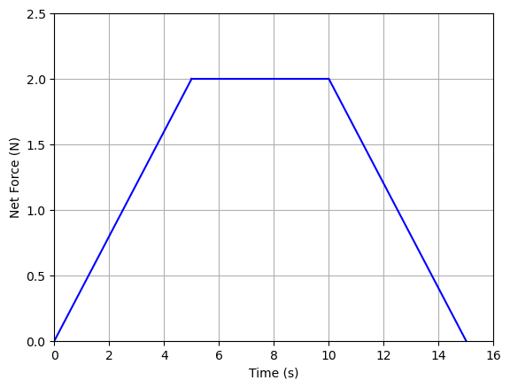

Linear Force: Graphical Interpretation#
1. Area#
We have seen that we can define the net interaction on a point particle through
and if the applied net force is constant (or considering the average force over the time interval):
and for a system of particles, where we consider the Center of Mass of the system:
and if the applied net force is constant (or considering the average force over the time interval):
where ext refers to external forces acting on the system.
In any of these cases, we can interpretate it as the following:
Example 1#
A 2.0 kg point particle is subject to a net force vs. time graph as the one shown by executing the code below. Assume all interactions takes place along the x-direction.
- What is the linear impulse of the particle over the time interval $t = [0,10]$?
- If the particle is at rest at t = 0 s, what is its velocity at t = 10 s?
import numpy as np
import matplotlib.pyplot as plt
%matplotlib inline
t1 = np.arange(0,5.1,0.1)
F1 = 2.0*np.ones(len(t1))
t2 = np.arange(0,5.1,0.1) + 5.0
F2 = -0.4*t2 + 4.0
plt.figure()
plt.ylabel('Net Force (N)')
plt.xlabel('Time (s)')
ax = plt.gca()
ax.plot(t1,F1,'b')
ax.plot(t2,F2,'b')
ax.set_xlim([0, 10.5])
ax.set_ylim([0, 2.5])
ax.grid()
plt.show()
Solution#
- The impulse is the area bounded by the graph and the time axis. We can divide it into two segments: a rectangle and a triangle. The ara of the rectangle is $A_1 = (2.0)(5) = 10$ Ns and the area of the triangle is $A_2 = (0.5)(5)(2.0) = 5.0$ Ns. The total area, and the impulse, is then
\[\vec{J} = (15~\textrm{Ns})~\hat{i}\]
NOTE: the unit Ns is the same as kgm/s.
- The impulse is the change in momentum of the particle:
$$ m\vec{v}_2 - m\vec{v}_1 = \vec{J} $$
Solving for the final velocity: $\(\vec{v}_2 = \vec{v}_1 + \frac{\vec{J}}{m} \)\( and inserting our numbers: \)\(\vec{v}_2 = (0)~\hat{i} + \frac{(15)~\hat{i}}{(2.0)} = (7.5~\textrm{m/s})~\hat{i} \)$
Box 1
A 2.0 kg point particle is subject to a net force vs. time graph as the one shown by executing the code below. Assume all interactions takes place along the x-direction.- What is the linear impulse of the particle over the time interval $t = [0,15]$?
- If the velocity of the particle is $\vec{v} = (-5.0~\textrm{m/s})~\hat{i}$ at t = 0 s, what is its velocity at t = 15 s?
import numpy as np import matplotlib.pyplot as plt %matplotlib inline t0 = np.arange(0,5.1,0.1) F0 = 0.4*t0 t1 = np.arange(0,5.1,0.1) + 5.0 F1 = 2.0*np.ones(len(t1)) t2 = np.arange(0,5.1,0.1) + 10.0 F2 = -0.4*t2 + 6.0 plt.figure() plt.ylabel('Net Force (N)') plt.xlabel('Time (s)') ax = plt.gca() ax.plot(t0,F0,'b') ax.plot(t1,F1,'b') ax.plot(t2,F2,'b') ax.set_xlim([0, 16]) ax.set_ylim([0, 2.5]) ax.grid() plt.show()

Solution:#
A 2000.0 kg car is at rest at t = 0 s and subject to a net force vs. time graph as the one shown by executing the code below. Assume all interactions takes place along the x-direction. What is its velocity at t = 2, 5, and 10 s, respectively? HINT: try and vizualize the motion of this car (directions traveling). There may be "negative" area(s).
import numpy as np
import matplotlib.pyplot as plt
%matplotlib inline
t = np.arange(0,10.1,0.1)
F = -500.0 + 200*t
plt.figure()
plt.ylabel('Net Force (N)')
plt.xlabel('Time (s)')
ax = plt.gca()
ax.plot(t,F,'b')
ax.set_xlim([0, 10])
ax.set_ylim([-500, np.max(F)])
ax.grid()
plt.show()
Solution:#
A 1.0 kg box is sliding across a surface and subject to the net force shown on the graph belox (execute the code). What is its impulse during the interval $t = [0,10]$ s and how fast is it moving after 10 s?
import numpy as np
import matplotlib.pyplot as plt
%matplotlib inline
t = np.arange(0,10.1,0.1)
F = 3.0*np.ones(len(t))
plt.figure()
plt.ylabel('Net Force (N)')
plt.xlabel('Time (s)')
ax = plt.gca()
ax.plot(t,F,'b')
ax.set_xlim([0, 10])
ax.set_ylim([0, 4])
ax.grid()
plt.show()
Solution:#
To predict the trajectory of a rocket, including its peak altitude and maximum velocity, we need a physics model with the proper aerodynamical physics implemented. An integral input is the impulse transferred from the engine to the rocket. To determine the impulse of an amateur rocket engine, we can use force plates and measure the force (or thrust) exerted by the engine on the plate as a function of time. Below are two examples of such force vs. time graphs.


Amateur rocket engines are typically labeled by three parameters:
a letter classifying a range of total impulse and is used to group engines according to their impulse.
a number indidating the average force (thrust) in Newtons.
a number specifying the delay between the burnout and the ejection charge if applicable.
An example of an engine is
This is a G engine with an average thrust of 78 N and a delay of 4 seconds.
The ranges of impulse describing the letter can be found here.
Estimate the total impulse of the two engines shown above and use the classification in the link above to determine the class (or group) of the two engines.
2. Slope#
Through the relationships
and
we observe that
This relationship is rarely practical, and is just something we should keep in the back of our mind in case we stumble upon it.